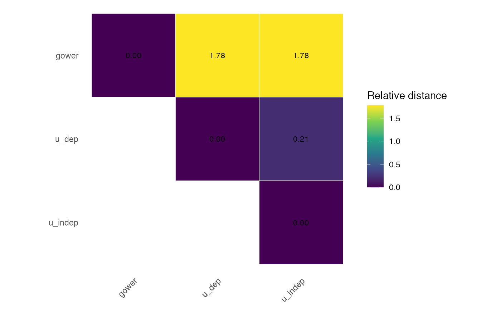

Benchmark and compare multiple `mdist()` specifications
benchmark_mdist.RdApplies [mdist()] repeatedly over a tibble of distance-method specifications, typically generated with [all_dist_method_specs()]. It then compares every pair of successful distance specifications using distance, configuration, and optional clustering diagnostics.
Usage
benchmark_mdist(
x,
response = NULL,
specs = all_dist_method_specs(),
dims = 2,
cluster_k = NULL,
cluster_methods = c("pam", "hclust", "spectral"),
hclust_method = "average",
spectral_sigma = NULL,
spectral_nstart = 50
)Arguments
- x
A data frame or tibble of predictors, optionally including the response column.
- response
Optional response column inside `x`, supplied either unquoted or as a character string.
- specs
A tibble of method specifications. By default, this is generated with [all_dist_method_specs()]. It must contain the columns `spec_type`, `preset`, `method_cat`, `method_num`, and `commensurable`. An optional `label` column supplies display labels for comparisons and plots.
- dims
Integer. Number of dimensions used by classical multidimensional scaling when computing congruence and alienation coefficients.
- cluster_k
Optional integer. Number of clusters used for pairwise adjusted Rand indices. If `NULL`, no clustering is performed.
- cluster_methods
Character vector specifying the clustering methods used when `cluster_k` is supplied. Possible values are `"pam"`, `"hclust"`, and `"spectral"`.
- hclust_method
Character string specifying the linkage method passed to [stats::hclust()] when `"hclust"` is requested.
- spectral_sigma
Optional numeric value for the Gaussian affinity bandwidth used by spectral clustering. If `NULL`, the default used by [spectral_dist()] is applied.
- spectral_nstart
Integer. Number of random starts used by the k-means step in spectral clustering.
Value
An object of class `"MDistBenchmark"`, which is also a tibble. It contains the supplied specifications together with:
- result
The corresponding output of [mdist()], or an error object if the specification failed.
- ok
Logical indicator; `TRUE` if the run completed successfully, `FALSE` otherwise.
- error
Error message for failed runs, `NA` otherwise.
Use [benchmark_comparisons()] to obtain the pairwise diagnostics and [ggplot2::autoplot()] to draw an annotated triangular heatmap.
Details
Each row of `specs` is interpreted as one valid `mdist()` configuration. Preset-based and custom component-based specifications are both supported. Failed specifications are caught and returned in the output rather than stopping the full benchmark.
Preset specifications use the `preset` column and ignore `method_cat`, `method_num`, and `commensurable`. Component specifications are evaluated as `preset = "custom"` and use `method_cat`, `method_num`, and `commensurable`.
Pairwise mean absolute difference (`mad`) is computed from the lower triangle of each dissimilarity matrix. The symmetric relative distance is defined as $$ \frac{2\,\mathrm{mean}(|d_a-d_b|)} {\mathrm{mean}(|d_a|)+\mathrm{mean}(|d_b|)}. $$ Classical multidimensional scaling configurations are compared using [congruence_coeff()]. The corresponding alienation coefficient is \(\sqrt{1-c^2}\).
When `cluster_k` is supplied, each requested clustering method is applied once to every successful distance specification. Partitions produced by the same clustering method are then compared pairwise using the adjusted Rand index. When `cluster_k = NULL`, no clustering is performed and no ARI columns are included in the comparisons.
Examples
if (requireNamespace("palmerpenguins", quietly = TRUE)) {
data("penguins", package = "palmerpenguins")
penguins_small <- palmerpenguins::penguins |>
dplyr::select(
species, bill_length_mm, bill_depth_mm, flipper_length_mm,
body_mass_g, island, sex
) |>
tidyr::drop_na()
specs <- all_dist_method_specs(
mode = "presets_only",
preset = c("gower", "u_indep", "u_dep")
)
res <- benchmark_mdist(
penguins_small,
response = species,
specs = specs
)
res |>
dplyr::select(spec_type, preset, ok, error)
benchmark_comparisons(res)
ggplot2::autoplot(res, metric = "relative_distance")
}
#> Warning: For method(s) 'matching', category dissimilarities do not depend on conditional profiles; `response` was therefore ignored.
